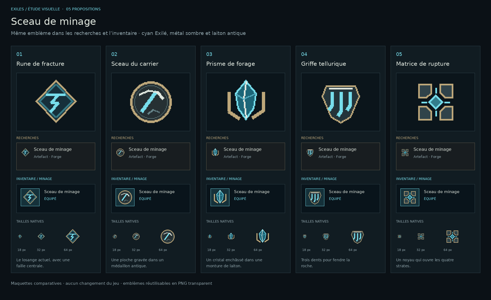

<!doctype html><html lang="fr"><meta charset="utf-8"><meta name="viewport" content="width=device-width,initial-scale=1"><title>Sceau de minage — 5 propositions</title><style>body{margin:0;background:#0b1116;color:#dce8e6;font:16px system-ui}main{max-width:1800px;margin:auto}img{display:block;width:100%;height:auto}nav{padding:20px 40px;display:flex;gap:24px;flex-wrap:wrap}a{color:#77ddeb}</style><main><nav><a href="assets/sceau-minage/01.png">01 · Rune de fracture</a><a href="assets/sceau-minage/02.png">02 · Sceau du carrier</a><a href="assets/sceau-minage/03.png">03 · Prisme de forage</a><a href="assets/sceau-minage/04.png">04 · Griffe tellurique</a><a href="assets/sceau-minage/05.png">05 · Matrice de rupture</a></nav></main>